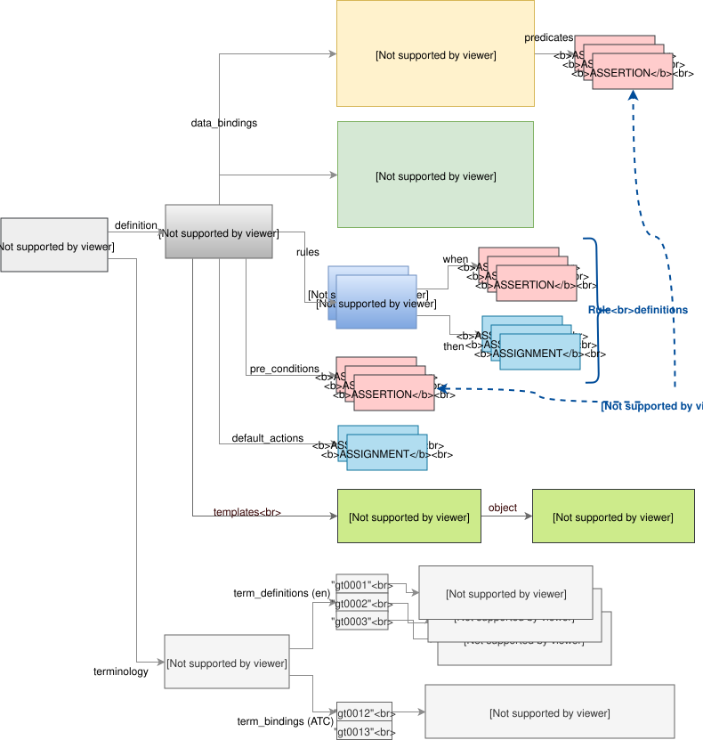
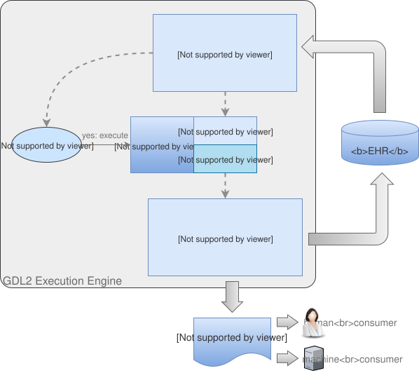

GDL2 Semantics
Rule Structure
The following diagram illustrates the structure of a GDL2 guideline. The central rules defining the semantics of the guideline are defined in terms of the formal rule definitions (when/then structures) coupled with 'rule execution filters', consisting of pre-conditions and predicates, that decide which rules are executed. If a rule is executed, its when conditions will be evaluated, and if all satisfied, its then actions performed. The data-bindings and terminology parts of structure define respectively, the mappings of the gt-codes used in the rules to nodes in input or output data sets (archetypes and/or templates); and the definitions of the gt-codes as terms, for human use. Finally, the optional templates provide a way of reporting generated results to downstream consumers. These are described in more detail in the Reporting section below.

Execution Model
The following diagram illustrates the execution model of a rule in a GDL2 guideline, showing more clearly the relationship between rule execution 'filters' and rule execution.

GDL2 Language Elements
Syntax
Because GDL2 guidelines are machine serialisations of the [GDL2 Object Model], the syntax is mostly a direct consequence of the structure. Currently, either openEHR ODIN or JSON syntax may be used. The exception is where expressions appear, which is within Assertion and Assignment statements, which as per the model, occur in /pre_conditions, data_bindings[id]/predicates, rules[id]/when statements, rules[id]/then actions, and Guideline default_actions.
The following subsections describe the expressions occurring in Assertion and Assignment statements. The former is a kind of statement that asserts the truth of a Boolean expression, while the latter is a programming-style assignment of an expression of any type to a variable of that type.
Pre-conditions
Pre-conditions (GUIDELINE.pre_conditions) are part of the execution filter for the rules in a guideline. Pre-conditions apply to the guideline as a whole, i.e. all constituent rules and usually specify conditions on the type of patient / subject to which the guideline applies. Input data sets not satisfying the pre-conditions will cause a Guideline to be considered by the execution engine as not applying, and execution will pass to other guidelines or terminate.
The following shows a pre-condition used in the CHA2DS2VASc_Score_calculation.v1.1.0 guideline. This says that the value of the gt0121 variable (meaning: Atrial fibrillation), which is mapped to the path /data[at0001]/items[at0035] in the archetype openEHR-EHR-EVALUATION.chadsvas_diagnosis_review.v1 is 1, i.e. it is present.
definition = <
pre_conditions = <"$gt0121 == 1|local::at0051|Present|">
data_bindings = <
["gt0122"] = <
model_id = <"openEHR-EHR-EVALUATION.chadsvas_diagnosis_review.v1">
type = <"INPUT">
elements = <
["gt0121"] = <
path = <"/data[at0001]/items[at0035]">
>
>
>
terminology = <
term_definitions = <
["en"] = <
["gt0121"] = <
text = <"Atrial fibrillation">
description = <"*">
>
...The following pre-condition is from the Coeliac_disease_alert.v2 guideline, expressed in JSON. The gt0015 code is mapped in a similar way to a data point within a diagnosis review. In this case, it asserts that there is no Coeliac disease diagnosis, which is the logical pre-condition for applying a Coeliac risk analysis guideline (clearly the latter is not useful for subjects already diagnosed as Coeliac).
"pre_conditions": [
"$gt0015|Coeliac disease diagnosis| == null"
],Rules
Rules consist of the pattern when Assertion(s) then Statement(s). The logic of multiple Assertions in the when part is and, i.e. all are needed for the rule to fire.
The following example is from the Coeliac_disease_alert.v2 guideline, and shows a rule whose when condition is a multi-way or expression of various conditions, and whose then statements consist of:
-
assignment to a variable from an output template that corresponds to a CDS hooks 'card' data item;
-
an internal
use_templatecall that tells the execution engine which reporting template to use.
This kind of rule essentially reports on a Boolean condition that was found to be present in the input data.
"gt0007": {
"id": "gt0007",
"priority": 1,
"when": [
"$gt0025|Type 1 diabetes| == true ||
$gt0029|Irritable bowel syndrome| == true ||
$gt0028|(Unexplained) B12, iron or folate deficiency (and relevant medicines)| == true ||
$gt0026|Autoimmune thyroid disease (and relevant medicines)| == true"
],
"then": [
"$gt0009|card.summary| = 'tTG serological testing is recommended'",
"use_template ($gt2022)"
]
}Rules may be used to perform calculations, such as the well-known Body Mass Index (BMI). The extract below is from the BMI_Calculation-FHIR.v1 guideline. The 3rd item in the then list is an assignment stating that the BMI variable gt0003 value should be set to weight (gt0007) / height(gt0005)^2.
"rules": {
"gt0012": {
"id": "gt0012",
"priority": 1,
"then": [
"$gt0003|BMI|.unit = 'kg/m2'",
"$gt0003|BMI|.precision = 1",
"$gt0003|BMI|.magnitude = $gt0007.magnitude/($gt0005.magnitude/100)^2"
]
}
}Rule-set action lists may be of any size, as shown by the following extract, from the QRISK2-2015_risk_calculation.v2 guideline.
"gt0025": {
"id": "gt0025",
"priority": 2,
"when": [
"$gt0026=='female'"
],
"then": [
"$gt1000|dage|.precision = 15",
"$gt1001|age_1|.precision = 15",
"$gt1002|age_2|.precision = 15",
"$gt1003|bmi|.precision = 15",
"$gt1004|bmi_2|.precision = 15",
"$gt1005|bmi_1|.precision = 15",
"$gt1006|rati|.precision = 15",
"$gt1007|sbp|.precision = 15",
"$gt1008|town|.precision = 15",
"$gt1000|dage|.magnitude = $gt0022|age|.magnitude",
"$gt1000|dage|.magnitude = $gt1000|dage|.magnitude / 10.0",
"$gt1001|age_1|.magnitude = $gt1000|dage|.magnitude ^ 0.5",
"$gt1002|age_2|.magnitude = $gt1000|dage|.magnitude",
"$gt1003|dbmi|.magnitude = $gt0024.magnitude",
"$gt1003|dbmi|.magnitude = $gt1003|dbmi|.magnitude / 10.0",
"$gt1004|bmi_2|.magnitude = $gt1003|dbmi|.magnitude ^ (0-2) * log($gt1003|dbmi|.magnitude)",
"$gt1005|bmi_1|.magnitude = $gt1003|dbmi|.magnitude ^ (0-2)",
"$gt1001|age_1|.magnitude = $gt1001|age_1|.magnitude - 2.086397409439087",
"$gt1002|age_2|.magnitude = $gt1002|age_2|.magnitude - 4.353054523468018",
"$gt1005|bmi_1|.magnitude = $gt1005|bmi_1|.magnitude - 0.152244374155998",
"$gt1004|bmi_2|.magnitude = $gt1004|bmi_2|.magnitude - 0.143282383680344",
"$gt1006|rati|.magnitude = $gt8005|Cholesterol/HDL ratio|.magnitude - 3.506655454635620",
"$gt1007|sbp|.magnitude = $gt0016|Systolic BP|.magnitude - 125.040039062500000",
"$gt1008|town|.magnitude = (0-0.416743695735931)",
"$gt0030|QRISK2 score|.precision = 15",
"$gt0030|QRISK2 score|.magnitude = 0",
"$gt0030.magnitude = $gt0030.magnitude + $gt0004|Smoking category 1|.value * 0.2119377108760385200000000",
"$gt0030.magnitude = $gt0030.magnitude + $gt0005|Smoking category 2|.value * 0.6618634379685941500000000",
"$gt0030.magnitude = $gt0030.magnitude + $gt0006|Smoking category 3|.value * 0.7570714587132305600000000",
"$gt0030.magnitude = $gt0030.magnitude + $gt0007|Smoking category 4|.value * 0.9496298251457036000000000",Expression Elements
Most expression terminal elements shown in the [Expressions Package] below are generated during the process of parsing larger expressions and statements found within guidelines, as per the above examples. Consequently, some properties, such as types of constants and variables are inferred and generated on the fly, rather than being stated literally within a guideline.
Local Variables
Local variables identified by gt-codes may be defined by including their gt-code definitions in the terminology in the normal way, and then just using them within assertions and assignments. They are tracked in the list GUIDELINE_DEFINITION.internal_variables, which is constructed on the fly during guideline materialisation.
Reporting
The actions performed when a GDL2 rule is fired consist of assignments, which result in a value being set in a location of an output data set.
The following example shows a rule whose then action list includes the internal call use_template($gt2022). The code gt2022 refers to a reporting 'template', which appears below the rule that mentions it. Within this template, the object field contains a structure whose model is defined by the preceding model_id and template_id attributes. Within the object structure, any output variables from the Guideline may be mentioned using the syntax {}, which means that at execution time, if the rule is fired, the template will be evaluated such that all {} mentions are substituted with their variable values, before final processing of the template (which might for example send it to a specific receiver service or application).
"rules": {
"gt0007": {
"id": "gt0007",
"priority": 1,
"when": [...],
"then": [
"$gt0009|card.summary|='tTG serological testing is recommended'",
"use_template($gt2022)"
]
}
"templates": {
"gt2022": {
"id": "gt2022",
"name": "coeliac-disease-alert",
"model_id": "generic_model",
"template_id": "generic_model",
"object": {
"cards": [
{
"summary": "{$gt0009}",
"detail": "Found risk factor(s):{$gt0020}",
"indicator": "warning",
"source": {
"label": "National Institute for Health and Care Excellence (NICE). Coeliac disease: recognition, assessment and management. 2015.",
"url": "https://www.nice.org.uk/guidance/ng20"
}
}
]
}
}
},